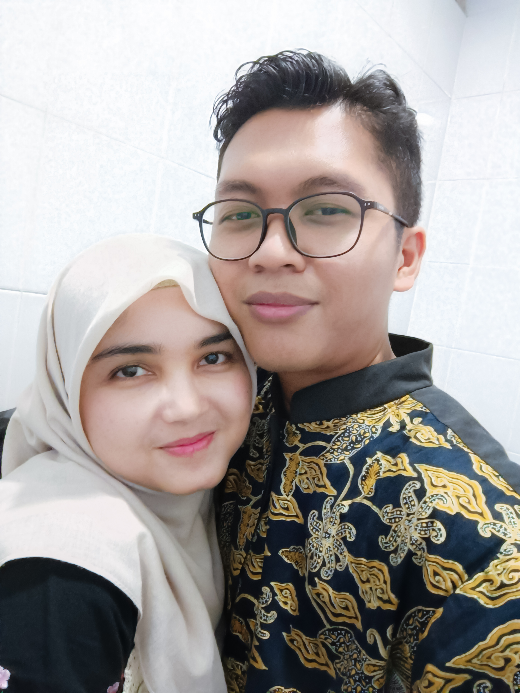

Barakallahu Fii Umrik, Syifani
Semoga Allah senantiasa memberkahi umur sayang, memberikan kebahagiaan yang abadi, dan menjadikan setiap langkah sayang penuh rahmat-Nya.

Maaf ya sayang, aku lupa, tapi bukan bener-bener lupa, selama ini aku hanya fokus pertahanin hubungan ini, setiap detiknya aku hanya berfikir gimana supaya hubungan ini tetap utuh dan membuat sayang nyaman dengan hubungan ini,
Jujur, pas aku liat story dia, aku beneran shock dan down, aku bayangin momen disaat sayang mau aku ajak p, gimana sayang berharap kalo aku bakal ucapin itu, ya meskipun kalo dari awal aku uda sadar,
pasti aku ucapin tepat di 00.01 tengah malem, tapi aku beneran ga fokus, maafin aku ya, aku ga langsung nyerah, aku langsung ungkapin peneyesalan aku di link itu, langsung minta maaf dan langsung tanyain apa yg sayang butuhin,
aku tau aku kurang sempurna buat sayang, tapi dibalik itu, aku tetap mengusahakan versi terbaik dari aku saat ini, itu respon tulus aku, aku minta maaf ya, sebagai bentuk penyesalan aku,
kalau sayang mau, aku siap dihukum setahun penuh untuk jaga jarak dengan sayang, sampai saat sayang ulang tahun di 2026, I Love You.
Semoga Allah selalu memberikan petunjuk-Nya kepada kita berdua, menjadikan cinta kita sebagai ladang pahala,
dan merawat kebahagiaan ini dengan kasih sayang-Nya yang tak terhingga.
Selamat ulang tahun, semoga menjadi pribadi yang lebih baik, penuh cinta, dan selalu dekat dengan-Nya.❤️
💖
"Dan Dia-lah yang menciptakan hidup dan mati, untuk menguji siapa di antara kamu yang lebih baik amalnya." - (Q.S. Al-Mulk: 2)
"Semoga setiap detik dalam hidupmu senantiasa penuh dengan keberkahan dan kebahagiaan." 💫